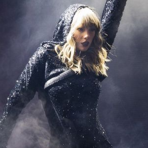
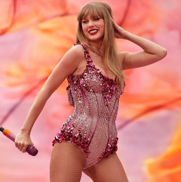

Todo lo que necesitas saber de "1989"
En 2014 nace su nuevo disco, "1989"(2014) este disco dio una vueltra de 360 grados, en este album abandona por completo sus tintes pop y su "niñes"
abandona la casa de sus padres y comienza su camino de conocerse a si mimsa, se comienza a relacionar con mas gente de la industria e incluso se reconcilia
con el rapero Kayne West. Previamente a este album tuvo otra relacion muy expuesta con un cantante,
algo que tambien marco mucho la energia de este album.
Toda esta era se caracterisa por su diversion, una era muy dinamica, con vestuarios de brillos,
labios rojos y polleras cortas, donde ella se perimite a si misma simplemente divertirse,
tomando el papel de "loca por los hombres" que le di la prensa y satirisansolo.
Este album nos muestra a una Taylor conociendose a si misma y su proceso en ese descubimriento
El álbum "1989" de Taylor Swift, lanzado el 27 de octubre de 2014, incluye las siguientes canciones:
- Welcome to New York
- Blank Space
- Style
- Out of the Woods
- All You Had to Do Was Stay
- Shake It Off
- I Wish You Would
- Bad Blood>
- Wildest Dreams
- How You Get the Girl
- This Love
- I Know Places
- Clean
- -Shake It Off: Un éxito global, fue uno de los sencillos más grandes de su carrera.
- -Blank Space: Con su sátira de la imagen mediática de Taylor, también fue un gran hit.
- -Style: Otra favorita de los fans, conocida por su sonido pop sofisticado.
- -Bad Blood: Fue muy popular, especialmente con su video lleno de estrellas invitadas.
- -Wildest Dreams: Esta balada tuvo mucha aceptación tanto en las listas como entre los fans.
Todo lo que necesitas saber de "Reputation"
Contenido de la sección sobre mí
En este punto Taylor estaba demasido expuesta a los medios y las redes sociales, lo que hace que reciba constantemente odio y criticas,
todo esto creando el clima perfecto para lo que seria su situacion con Kayne West .
Resumiendo este conflicto, Kayne expuso una conversacion telefonica con Taylor donde le preguntaba su podia nombrarla en una cancion
(filtrando la parte en donde ella aceptaba) sin emargo ella no tenia conocimiento de como iba a ser usado su nombre.
Al final, Kayne uso su nombre en insinuaciones sexuales y al Taylor mostrarse en contra, se filtro la llamada telefonica de Kayne y Taylor
haciendola quedar a este ultima como una mentirosa ya que "si estaba al tanto".
Luego de esta situacion Taylor se gana no de sus apodos mas representativos serpiente, en el que la gente la acusaba de ser una estratega mediatica,
una calculadora etc.
Taylor decide esconderse de las redes un tiempo, no mas conciertos ni enrtretivas y el ojo publico no la ve por dos años
En 2016, Taylor reabre su instagram con un video animado de una serpiente.
Debemos tener en cuenta que en este mismo año 2016 Taylor comenzaria la relacion amorosa mas larga de su vida (6 años)
por lo que este album es un album muy dual, es un album de venganza, de dolor y de traicion y a su vez es un album de lo que Taylor creia iba
a ser el amor de su vida.
En noviembre de 2017 estrena "Reputation"(2017) siendo este un album muy conciente de si mismo, Taylor se apropia de este imagen de arpia y
la uiliza como personaje, se apropia de su apodo serpiente y lo utuliza a su favor en vestuario y escenografia,
es muy consiente de lo que el mundo piensa de ella y de lo que ella le piensa devolver a este mundo,
usando varias metaforas en sus letras y en sus videoclips. Al final el tour de este album fue el tour femenino con mas ventas,
teniendo 54 fechas y mas de 2 millones de personas en total
El álbum "reputation" de Taylor Swift, lanzado el 10 de noviembre de 2017, incluye las siguientes canciones:
- ...Ready for It?
- End Game (con Ed Sheeran y Future)
- I Did Something Bad
- Don't Blame Me
- Delicate
- Look What You Made Me Do
- So It Goes...
- Gorgeous
- Getaway Car
- King of My Heart
- Dancing with Our Hands Tied
- Dress
- This Is Why We Can't Have Nice Things
- Call It What You Want
- New Year's Day
- -Look What You Made Me Do: Un éxito inmediato que rompió varios récords.
- -...Ready for It?: Muy popular, especialmente por su estilo más oscuro y electrónico.
- -Delicate: Una balada que se convirtió en favorita entre los fans y tuvo gran éxito en las listas.
- -End Game: La colaboración con Ed Sheeran y Future fue un hit notable.
- -Gorgeous: Una hermosa balada muy aclamada por los fans
Taylor firmó con Big Machine a los 15 años, cediendo los derechos de sus primeros seis álbumes. Sin embargo, tenia a favor que en ese antiguo contrato ella firmo que pese a que las canciones pertenecian a la disqueta, ella tenia todo el derecho a regrabarlas si asi lo decease. Scooter Braun compró Big Machine en 2019,
obteniendo así esos derechos a lo que Taylor se mostró disconforme porque consideraba que Braun había sido abusivo y manipulador. Al firmar con Republic Records en 2018, Taylor pudo lanzar música nueva bajo un sello diferente. Y en 2020, Taylor anunció que regrabaría sus álbumes antiguos para tener el control de sus versiones y ganancias. Y así nacieron las "Taylor's Version". 
Todo lo que necesitas saber de "Lover"
"Lover"(2019)su primer album con la discografica Republic Records y es un album que nos muestra un gran cambio de estetica y de escencia,
vemos una estetica mucho mas suave, con tonos rosados, lover es sobre el amor completamente, el amor familiar y la lucha sobre el cancer de su madre,
el amor de pareja e incluso el amor propio
"Lover" fue muy bien recibido por la crítica y los fans. Fue el álbum más vendido de 2019 en los Estados Unidos y recibió certificaciones
de platino en varios países. Además, fue nominado para el Grammy a Mejor Álbum Pop Vocal y ganó el American Music Award a Álbum Pop/Rock Favorito
"Lover" explora los diferentes matices del amor, desde la alegría y la pasión hasta la pérdida y la resiliencia.
Cada canción captura una faceta distinta del amor, creando un mosaico emocional. El álbum también toca temas como el feminismo y la aceptación,
destacando la evolución personal y la autoaceptación de Taylor. Es un viaje a través de las complejidades del amor y las relaciones,
visto desde el prisma de experiencias personales y momentos introspectivos
El álbum "Lover" de Taylor Swift, lanzado el 23 de agosto de 2019, incluye las siguientes canciones:
